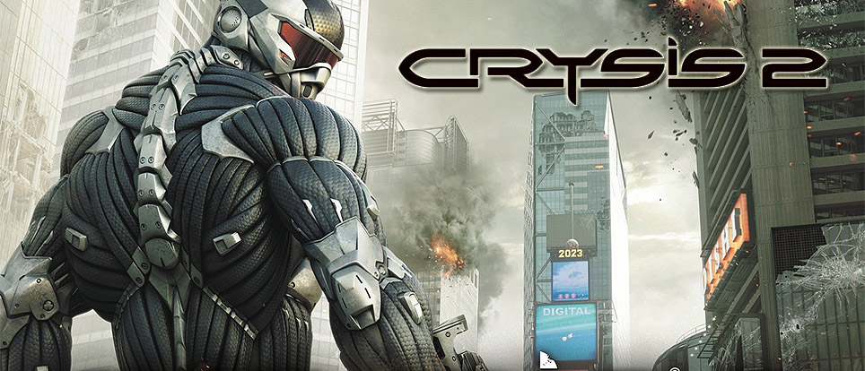
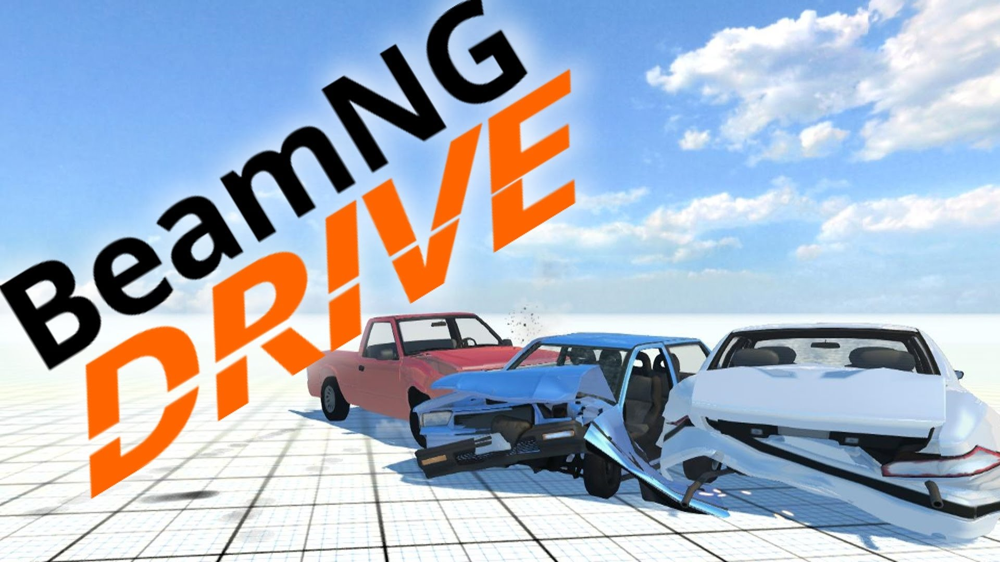
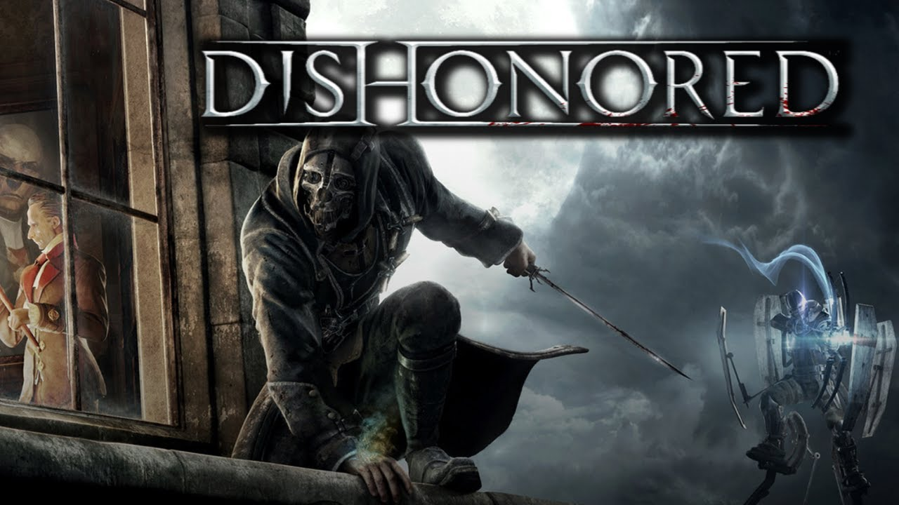

Top 5 gier.

Crysis 2

Crysis 2 to pierwszoosobowa strzelanina, w której ponownie przywdziewamy dający nadludzkie możliwości nanokombinezon, by stanąć przeciwko hordom obcych najeźdźców. Stawką w tym starciu jest przyszłość naszej planety. planety. Akcja gry zaczyna się trzy lata po wydarzeniach, których świadkami byliśmy w pierwszej części. Przez ten czas obcy zadbali, by znaczna część naszej planety przeobraziła się w pole bitewne.
The Elder Scrolls V: Skyrim

The Elder Scrolls V: Skyrim to kolejna część serii cRPG autorstwa zespołu Bethesda Softworks. Ponownie odwiedzamy w niej kontynent Tamriel, a fabuła tym razem obraca się wokół powrotu do tej krainy pradawnej rasy smoków. Akcja toczy się 200 lat po wydarzeniach opowiedzianych w grze Oblivion. Gracze wcielają się w jednego z ostatnich bohaterów parających się profesją dovahkiina, czyli łowcy smoków.
Europa Universalis IV

Wzorem wcześniejszych odsłon cyklu, w Europa Universalis IV gracz wciela się w rolę szarej eminencji, która kieruje rozwojem wybranego kraju na przestrzeni wieków. Tym razem do wyboru jest ponad 250 nacji zamieszkujących praktycznie cały glob. Zależnie od scenariusza długość historycznego okresu gry może wynosić nawet blisko 400 lat (w kampanii głównej).
BeamNG.drive

Dlatego BeamNG.drive oferuje sandboksowy model rozgrywki, w którym swobodnie przemierzamy zróżnicowane lokacje o otwartej strukturze, oddając się przyjemności płynącej z jazdy i eksploracji. Robimy to za kierownicą jednego ze stosunkowo pokaźnej puli pojazdów, w pełni podatnych na uszkodzenia i szeroki zakres modyfikacji.
Dishonored

W Dishonored gracz wciela się w postać Corvo Attano, legendarnego Lorda Protektora cesarzowej Jessamine Kaldwin, zamordowanej w zamachu stanu uknutym przez ambitnego Hirama Burrowsa, Lorda Regenta. Fikcyjne miasto Dunwall, które zwiedzamy w czasie przygód, czerpie z estetyki steampunka i epoki wiktoriańskiej.